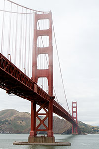
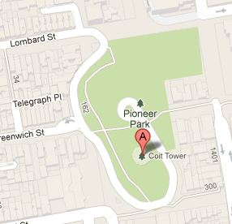

Landmarks of San Francisco
Golden Gate Bridge
The Golden Gate Bridge is one of my favorite locations in San Francisco. As I am a photographer I enjoy the various photographic opportunities that the bridge provides. My favorite is when the fog rolls in and the fog horn starts up on the bridge. I have recorded up to an hour of the fog horn with the sound of the cars off in the distance and the birds flying nearby. The Media section of this website features numerous photographs, videos and audio files of the bridge.
Facts about the Golden Gate Bridge
- The bridge opened on May 28, 1937
- It would cost 1.2 billion dollars to rebuild the bridge today.
- There are about 600,000 rivets in each tower.
- The Golden Gate bridge is the 9th longest suspension bridge in the world at 4,200 feet. The longest is the Akashi-Kaikyo Bridge in Japan 6,529 feet.
- As of May 30, 2012 1,970,331,117 vehicles have crossed the Golden Gate Bridge (includes northbound and southbound) since opening to traffic on May 28, 1937.
Coit Tower
Coit Tower is also known as the Lillian Coit Memorial Tower and stands 210 feet tall on Telegraph Hill. The tower provides great vistas of the city of San Francisco as you can see in every direction from the observation level. The archways at the top are enclosed with Plexiglas, however you are still able to get great shots through them as I have always found them clean. Tripods are not allowed, most likely due to space, however I was able to use a mono-pod with my camera last time I visited the tower. A good mono-pod is a good idea for taking photos within San Francisco as it helps you stay mobile while still obtaining steady shots.
I always walk to Coit Tower while I am visiting the Embarcadero area. I you walk down Kearny St. which is near Pier 35 you will come to a court yard area on the right, just walk through this area and proceed up the wooden staircase that is built into the side of the hill. This will put you on Francisco St. Then just make a left on Grant Ave and walk up this street (it is fairly steep), then you can turn left onto Lombard St. and follow it all the way to the parking lot of Coit Tower. Parking spaces are limited up there, so walking I find is better.